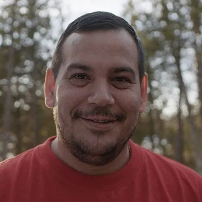
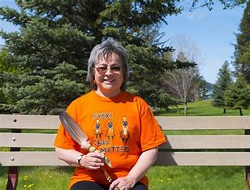
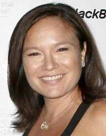

Indigenous in People in Motivation and Media
Isaac Murdoch

He is Ojibwe, and part of the Fish Clan. Isaac Murdoch is a popular and well respected indigenous storyteller who shares his wisdom,
knowledge and culture with powerful stories that have engaging narratives and that celebrate the culture of the first nations people.


Phyllis Webstad

Buy her book!
A survivor of the residential system in Canada, Phyllis Webstad's story of her gifted orange shirt sparked cultural conversation arounf the country
about the treatment of Native peoples in Canada and the corrupt residential school system. On Orange Shirt Day, Canadians appreciate the contributions of Indigenous people in this country
and discuss and work towards reconciliation and cooperation with natives.
Jennifer Podemski

Jennifer Podemski is an actress, director, producer, co-founder of Big Soul Production, and CEO of Redcloud Studios which is an indigenously owned and run,
award-winning company producing content through indigenous eyes. Throughout her career, she focused on how there is a lack of indigenous representation in
the film industry and founded these companies that address that fact.